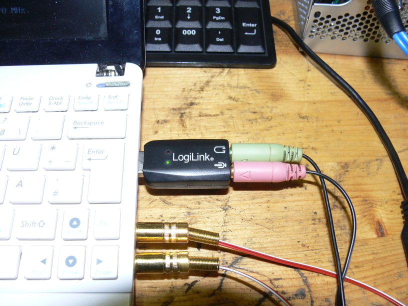
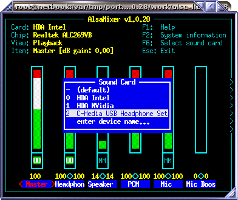
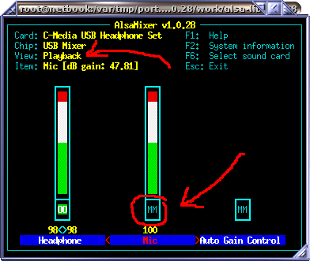
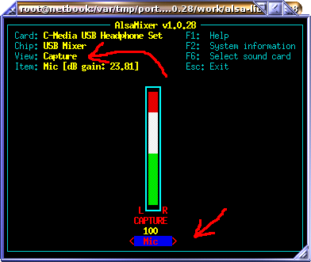

Connecting headset
You need a headset and a second audio device.
I use a cheap 'LogiLink' USB sound adapter and a Headset with microphone.

You may use an USB sound adapter and a headset or a USB headset with built-in sound card.
Check 'alsamixer' if the sound adapter has been detected.
Press 'F6' to select the headset or the sound adapter connected to the headset.

Mute the microphone, so you wount hear yourself if you speak into the microphone.
Be sure to press 'F3' to change into Playback view.
Mute playback and not recording from microphone.
To mute, select he microphone with the cursor keys and press 'm'.

To get the device, run 'arecord -l' and you get the following list, if you have two sound cards:
# arecord -l
**** List of CAPTURE Hardware Devices ****
card 0: Intel [HDA Intel], device 0: ALC269VB Analog [ALC269VB Analog]
Subdevices: 1/1
Subdevice #0: subdevice #0
card 2: Set [C-Media USB Headphone Set], device 0: USB Audio [USB Audio]
Subdevices: 1/1
Subdevice #0: subdevice #0
You see your card 0 and device 0: This should be the sound card you connect to your radio equipment.
There is also the second sound device: In my case it is card 2 and device 0.
Connect the second sound device to your headset and use '-c hw:2,0" (card 2, device 0) to tell the base station to select this sound device for your headset.
To calibrate audio level, run some music player and adjust output volume, so you hear the music at regular speech volume.
Use 'alsamixer' to change the output volume of your second sound card.
This calibartion must be done before calibrating the microphone.
To calibarte input level (mircrophone), run the B-Netz base station with loopback test 3.
# src/bnetz/bnetz -L 3 -c hw:2,0
bnetz.c:268 info : Entering IDLE state, sending 'Gruppenfreisignal' 2 on channel 1.
Base station ready, please tune transmitter to 153.010 MHz and receiver to 148.410 MHz.
To call phone, switch transmitter using pilot tone to 153.370 MHz
Now you should hear yourself when you speak into the microphone.
You should also notice a short delay, but this is normal.
Now it is time to calibrate the microphone:
Use 'alsamixer' to adjust input level, so that you hear your voice at regular speech volume.
Be sure to select Capture view by pressing 'F4'.

I also had to mute the "Auto Gain Control", as found in the Playback View by pressing 'F4'.
I muted it using 'm' key.
Finally store the settings using "alsactl store" command.
Do this whenever you want to keep your adjustments.
[Back to main page]
|